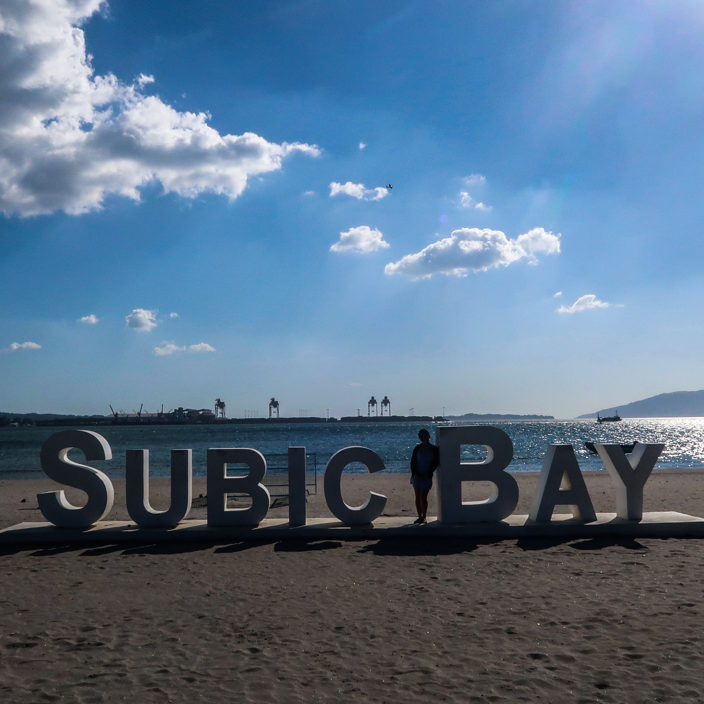

Sea Front SBMA is a beautiful waterfront area located in Subic Bay Freeport Zone in the Philippines. It offers stunning views of the sea and is a popular destination for tourists and locals alike. Visitors can enjoy leisurely walks along the promenade, dine at seaside restaurants, and partake in various water activities such as swimming, snorkeling, and jet skiing. The Sea Front SBMA is a serene and picturesque spot perfect for relaxation and enjoying the beauty of the ocean.
Seafront SBMA is a premier beachfront destination located in the Subic Bay Freeport Zone in the Philippines.
With its pristine sandy beaches, crystal-clear waters, and breathtaking views of the surrounding mountains,
Seafront SBMA offers a unique and relaxing getaway for visitors. The resort boasts a range of amenities including
luxurious accommodations, watersports activities, and dining options serving fresh seafood and local delicacies.
Whether you're looking for a peaceful retreat or an adventure-filled vacation, Seafront SBMA has something for everyone.
There is a taxi available for transportation in front of Subic Gym.